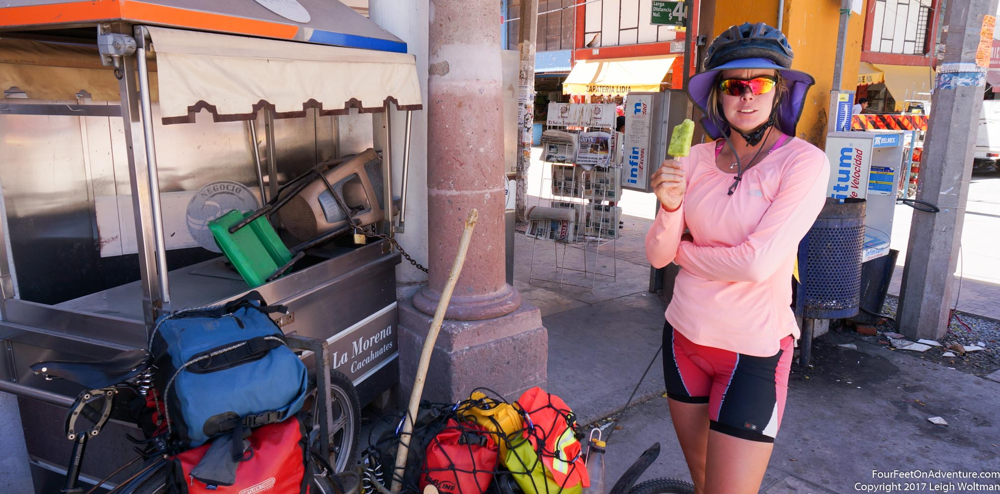
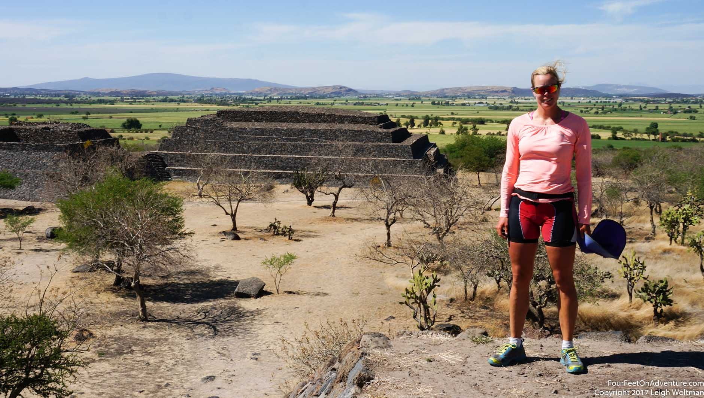
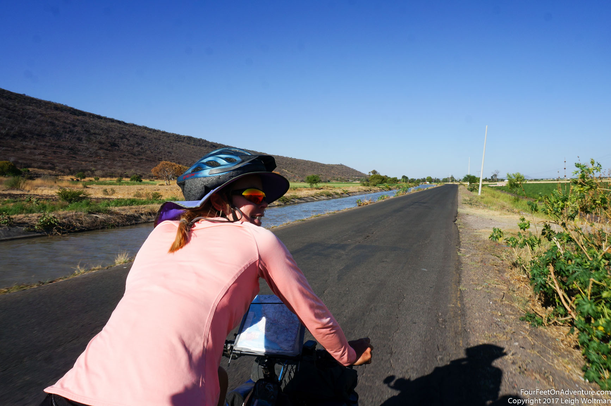
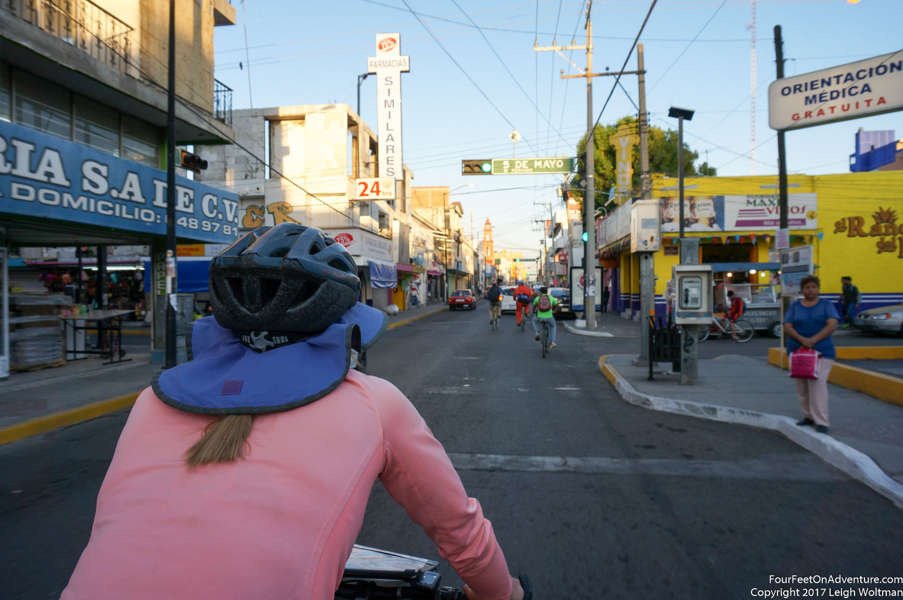
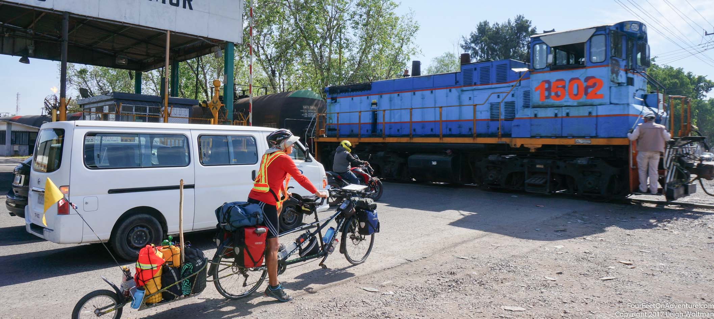
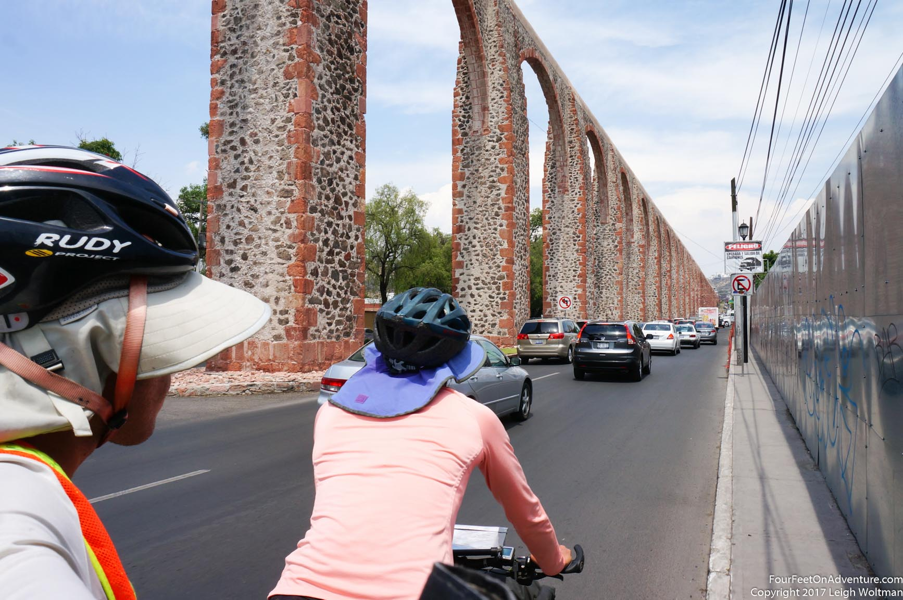

Email Us
Please send us an email, we would love to hear from you!

In Ocotlan, we managed to get life organized a little bit. I got a haircut which is always fun to try and communicate with hand gestures and some translated Spanish. Upon leaving, I strained a rib muscle in my back and it was rather painful to hold myself on the bike, but as long as I was still and looking straight ahead it seemed okay. We passed through many small towns with now just rolling hills to contend with.

Eventually, we detoured towards another archaeological site. Peralta was by far the largest pyramids we had come across so far, and they had a nice museum to look around also. The site was very quiet so we felt somewhat comfortable leaving the bike and gear as we walked around together.

Our rural road followed irrigation channels and was very flat making the landscape almost seem a little Dutch.

Our winding road was the only paved road around, and it took many turns on the way to Salamanca. It was sunny and dry and clothes line from local houses swayed in the gentle wind. The outskirts of Salamanca was almost a little bit strange to observe, the communities here were gated and all relatively recent construction. Each one had exactly the same house duplicated within it, taking us past a landscape dominated by artificial patterns. It was a long riding day, so we stopped at a Subway for dinner before proceeding downtown. We found out the town hosts Mazda's Mexican manufacturing plant so all the new residences are probably to accommodate an influx of workers. Annette surveyed a couple hotels before deciding on one which would allow our bike to be locked in its underground parking garage.

The ride out of town in the morning took us right by a large Pemex refinery. We were stopped by a train with a switcher pushing oil cars around. Next we passed the gas flare which was venting heavily and sounded like a full running jet engine even though it was hundreds of metres away from us. We cycled east, still trying to piece together a route out of the secondary roads and highways instead of the toll road that ran exactly in the direction we wanted to go. Today, the route deteriorated as we went along, eventually we were riding in a rough gravel path between two rail lines, sadly no trains passed us. Along the way, we had a tire deflate, but held enough air that it was able to be pumped up and continue on, a patch job to be left for the next day. Once our gravel road connected us back up with paved roads, we were entering Santiago de Queretaro. However, the highway heading in was fast and had very little shoulder. With cars streaming past us for the several kilometre ride our nerves were a little frayed by the time we got to the centre of town. In town we found a hotel, there are lots of tourists here, particularly Spanish language learners, so hotels are a little expensive. We found one that we decided to stay at for a couple days, however, on the second day, they decided we needed an extra person surcharge applied, so we decided to leave.

Getting on the bicycle, we were a little late, and I felt my hip twinge a little stepping over the bike. Cycling out to the city we came across a old aquaduct suspended high above the middle of the road we were cycling with stone and brick arches.

We headed towards Tequisquiapan through more fields and eventually by the local airport which was the location of some familiar names, a Bombardier manufacturing plant and a Delta Airlines maintenance facility. My hip continued to deteriorate throughout the day, and the cobbled streets that lined the resort town of Tequisquipan were painful. It didn't help that this was a little resort town for people from Mexico City, so it was fulls of spas and hotels well out of our range. After something like the eighth hotel visit, we came to one that would meet our budget. The next morning we continued to ride, but my hip was more and more aggravated. The land was becoming more and more hilly, our flat section of farmland over the past week was coming to an end and the volcanoes blocking our way to Mexico City were just starting to hint at themselves. We rolled into Tula, and I was in need of a rest, so we tried to find a hotel which seemed decent for a couple days. As we left a high rise hotel because it was too expensive, 'the manager' riding in a taxi asked us how much we wanted to pay. We got an offer of half price and decided to run with this. Eventually, we did see him in the hotel so maybe he was actually a manager, but we still aren't sure.
We ended up staying a week, with my condition not improving but the hotel easy to stay in. We had easy access to restaurants and in particular a little vegetarian buffet place that worked perfectly for Annette. We looked for a doctor in town that might speak English but with no luck we decided we might have more success in Mexico City. We eventually decided that we shouldn't push the injury on the bike so with that evening booked at the hotel, we wheeled the BOB trailer and ourselves towards the bus station. We took a bus into the Mexico City Norte terminal and from there tried to find a hotel. Annette was determined to wheel the trailer along the street to our destination, but the going was slow, painful and it was really hot outside. Eventually, we flagged a cab and after some experimentation determined that the trailer would not fit in the trunk so we had to put it in the back seat. Our hotel wasn't ideal but Annette left me there while she took the bus back to Tula where she spent the night and then proceeded to cycle the same route with the bike the next day.
Please send us an email, we would love to hear from you!